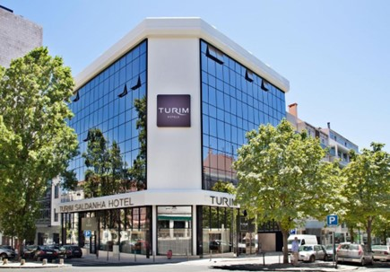

Plan putovanja Lisabon:
DAN 1 - TORANJ BELEM (TORRE DE BELEM)
Toranj Belém je simbol grada Lisabona i jedan od najvažnijih spomenika u Portugalu. Ovaj impozantni toranj se nalazi u predgrađu Belem, na zapadnoj obali reke Tagus, a izgrađen je u 16. veku kao fortifikaciona tačka na putu ka Indiji i drugim portugalskim kolonijama. Toranj Belém je visok 35 metara i sagrađen je u stilu manuelske arhitekture, koji je karakterističan za portugalsku renesansu. Ima oblik prizme sa četvrtastim osnovom, a na vrhu se nalazi terasa sa kamenim kuglama. Na vrhu tornja se nalazi statua Device Marije, koja je korišćena kao navigacioni simbol za pomorce. Zbog svoje kulturne i istorijske važnosti, toranj je 1983. godine proglašen delom Svetske baštine UNESCO-a.
DAN 2 - OKEANARIJUM
Lisbon Oceanarium je jedno od najvećih akvarijuma u Evropi. Smešten je u modernoj građevini na obali reke Tejo u popularnom turističkom naselju Parque das Nações. Posetioci imaju priliku da vide preko 8.000 morskih stvorenja iz različitih delova sveta, uključujući i egzotične vrste koje obitavaju u dubokom okeanu. Glavna atrakcija ovog akvarijuma je “Veliki akvarijum”, koji sadrži više od 5 miliona litara vode i dom je preko 100 vrsta morskih životinja, uključujući morske pse, raže, tune, lubanje i brojne druge vrste riba. Posetioci se mogu prošetati tunelom kroz ovaj ogromni akvarijum i doživeti pravi susret sa morskim životinjama. Takođe postoji i posebna izložba posvećena Antarktiku i morskim lavovima.
DAN 3 - ESTADIO DA LUZ I ESTADIO JOSE ALVALADE
Stadion svetlosti (Estádio da Luz) je fudbalski stadion u Lisabonu, Portugalija. Otvoren je 25. oktobra 2003. prijateljskom utakmicom između Benfike i urugvajskog Nasionala iz Montevidea. Stadion je domaći teren FK Benfika, a kapacitet stadiona je 65.647 sedećih mesta. Navijači Benfike ga zovu Katedrala. Ovo je stadion najviše četvrte kategorije UEFA i spada među 25 stadiona sa najvećim kapacitetom u Evropi. Često ga koristi i fudbalska reprezentacija Portugalije.
Stadion Žoze Alvalade (Estádio José Alvalade) je fudbalski stadion u Lisabonu (Portugalija). Dom je Sporting klub de Portugala i ima kapacitet od 50.095 mesta. Izgrađen je pored mesta starijeg stadiona, a novi stadion je nazvan po Hozeu Alvaladeu (1885–1918), osnivaču i prvom članu kluba Sporting KP početkom dvadesetog veka. Novi stadion zvanično je otvoren 6. avgusta 2003. kada je Sporting igrao i pobedio Mančester junajted sa 3:1. Luis Filipe je postigao prvi gol u istoriji na novom stadionu Žoze Alvalade u navedenoj pobedi protiv Mančester junajteda igrajući zajedno sa saigračem iz portugalskog Sportinga Kristijanom Ronaldom, koji je tada imao 18 godina i koji je istog dana odigrao poslednji meč za portugalski klub.
REZERVACIJA PUTOVANJA

Avio aranžman:
Autobus aranžman:
Izvršite rezervaciju